Ghostly Affection
gallery
駄文 / 落書き 置き場
恋色＊パレット
季節に応じた12色の短編オムニバス作品。現在、鋭意製作中です。
更新 : 2012.09.10
ユキバナ
[Re:]ヒロイン「雪華」ビフォアーストーリー。capriccio suite 旧webサイトから転載
更新 : 2012.09.14
落書き
主に旧サイト他で公開してた看板娘(？)や日記用イラスト他
更新 : 2012.09.10
恋色＊パレット
季節に応じた12色の短編オムニバス作品。特に片想いと片想われ、略して「カタオモ」が好きな方へ送ります。
それぞれ、書き方・人物・人称は異なり、どれを読んでも、どこから読んでも構わないというスタイルです。
鋭意制作中なので差し替えなどがあるかもしれませんが、紹介を以下に作りました。
photo by TAKENOHA / tarupito
04月 桜色＊ハイスクール / 05月 空色＊コイン / 06月 雨色＊アンブレラ / 07月 無色＊ラバー
08月 海色＊プラットホーム / 09月 虹色＊アンドロイド / 10月 月色＊ピアニッシモ / 11月 秋色＊ルームメイト
12月 星色＊サンタ / 01月 灰色＊ゴンドラ / 02月 雪色＊ホスピタル / 03月 恋色＊パレット / 注釈・後書き
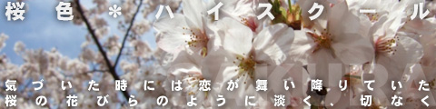
preview
恋だ何だは自分の中では遠くて高くて、何か別次元のモノのように思っていた。
憧れはすれども、それは例えば「空が飛べたらなぁ」という感覚に近い。
目の前の履歴書はそんな「価値のない自分」を証明するかのように、
長所の欄だけが一向に埋まらない。
ひたすら繰り返されるため息とペン回し。そんな春 ───
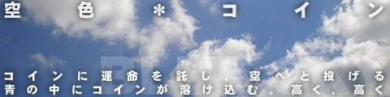
preview
一目惚れしてしまった。
会った瞬間に好きになった。理由は分からない。
でも、どうしても告白する勇気が出ずに、当たるようにペダルを漕いでいた。
気がつくと自転車は名も知らぬ公園に。
そこで僕は決意した。
自分の運命をポケットの中にあったコインに託すと ───

preview
雨の日。私はあてもなく街へ出る。
私は変わろうとしていた。この傘を買って変わるはずだった。
でもどんなに歩いても見渡す景色はいつものままで、
どんな路地に入ろうとも、行き止まりか見知った通りに出てしまう。
歩くのに限界があるのを知っていて、かといってバスや電車にも乗れない。
それが今の私と、私の傘だ ───
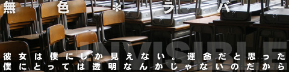
preview
ある日、自分の前に突然現れた少女。
それは自分以外には見ることの出来ない…つまりは幽霊だった。
なぜ彼女が自分の前に現れて、なぜ自分だけが見れるのか…。
でも今はそれよりも重要なことで思い悩んでいる。
俺は彼女に恋をしてしまったのだ ───
04月 / 05月 / 06月 / 07月 / 08月 / 09月 / 10月 / 11月 / 12月 / 01月 / 02月 / 03月 / 注釈・後書き
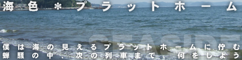
preview
冷房の効いた車内と昨日の寝不足に図られ、慌てて飛び降りた駅のホーム。
そこは日に数本の電車を気長に待つ鈍行列車の停車駅。
目の前に広がる海岸線。人の見えない無人駅。
こんな状況で「圏外」と表示する携帯をへし折りたい気持ちを我慢しつつ、
どうしようかと天を仰いだ ───

preview
少し遠い未来。人工的に命を授かったアンドロイド<機械少女>はがいる世界。
より人間というものを理解させるため、本格的な実務訓練の前に、
里親のもとで３年暮らす制度がある。
１年ごとに親役は変わり、１年ごとに表面的な記憶は消去されていく。
問題児を抱えた中学教師、機械に恋した青年、記憶を保てない老人…
彼女<機械少女>は何を得、何を学ぶのか ───
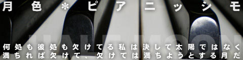
preview
「彼は天才である」
記事の副タイトルはほぼ決まっていた。
あとは彼が天才であることを彼の言葉から導き出せばいい。
しかし期待は裏切られた。
「自分は太陽ではなく、月である」と。
天才は天才であることを否定した。
それは私が否定されたと同じようなことだった。
しかし私は気づいてなかった。
別の感情が芽生え始めたことに ───
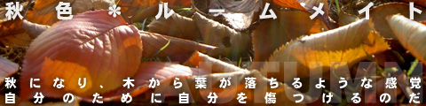
preview
「結婚しよう」
口癖のようにつぶやく彼。答えない私。
幼なじみとの腐れ縁も今年で１５年。
端から見れば恋人同士のような生活が２年続いている。
私は彼が好きだ。彼も私が嫌いではないはずだ。
でもお互い知っている。
「私と彼」が本当に好きなのは、決して「彼と私」ではないと ───
04月 / 05月 / 06月 / 07月 / 08月 / 09月 / 10月 / 11月 / 12月 / 01月 / 02月 / 03月 / 注釈・後書き

preview
少年はサンタを信じている。
それと同じように「寝なければ朝が来ない」と信じている。
彼にとって、それは絶対であり、世界の一部でもある。
クリスマス当日。
どうやって日が昇るのか、どうやって星が消えていくのか、
それを知ってしまうでは ───

preview
観覧車に入る。私は彼に別れを告げるためにこの場所を選んだ。
ゆっくり高度を上げるゴンドラ。続く沈黙の時間。
私は意を決して口を開く。
再び地上に降り立ち、笑顔でさよならが言えるように。
それが自分たちのためだと信じて ───
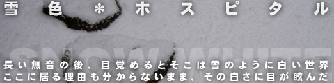
preview
長い夢を見ていた。少年と出会い、励まされる夢だ。
起きるとそこは真っ白な病室。
ゆっくりと「彼」がいないことを思い出す。
「彼」がいないこの世界が夢でなく現実であること。
それがどういうことなのか、私は思い出す。
夢の中で励まされた理由を。雪のように白く、夢のような現実で ───
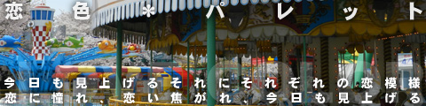
preview
人気ない時間帯の郊外の遊園地。
初春の陽気を楽しみながら、いつのも定位置に座る。
しかし今日は小さな奇跡が起きた。
いつものこの時間帯なら３、４人を乗せるためだけに回る観覧車に
10組を超える客が乗ってきたのだ。
恋人のように見える客、まだ友達のように見える客。
それぞれがそれぞれに乗り込む姿に、勝手な恋模様を妄想しながら、
僕は観覧車を見上げた ───
04月 / 05月 / 06月 / 07月 / 08月 / 09月 / 10月 / 11月 / 12月 / 01月 / 02月 / 03月 / 注釈・後書き
postscript
未完成作品に後書きも何もないですが、完成したら後書き、今は注釈ということで。
仮タイトル「季節の何か(仮)」。
起伏がなく長さも作風もバラバラな書き殴りを「雰囲気を楽しむバックグラウンド的作品」と言い訳しながらまとめた作品集。
十年弱前に書いた当作品ですが、同人誌で完成しなかったことと、WEBコンテンツ強化のため、
内容を加筆修正・差し替えしながら、掲載することに。
自分用なので待ってる人もいないと思いますが、完成まで当分かかるので気長にお待ち下さい。
ユキバナ
story : 下の画像をクリック
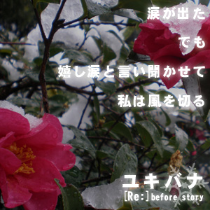
postscript
[Re:]に登場する主人公の妹、雪華（せつか）ちゃんのビフォアーストーリーです。
発売前からスペシャルコンテンツとして、capriccio suite [Re:] 紹介ページ内に
各キャラクターの前後談を掲載しており、そこから転載しました。
ビフォアーと銘打ってますが、正確にはゲーム内のとある時期での内容。
詳しくは是非ゲームをプレイしてみて下さい。
ちなみに上の画像はこのサイト用に制作したものです。
あくまで雪と華のイメージで、物語の情景とは関係ないのであしからず。
[Re:]についてはこちら
落書き
順番バラバラに書き汚しを掲載。新しいのでも5年前くらいかも。
D.IKUSHIMA氏作のウゴツールを多用させてもらってます。

{kind=link}
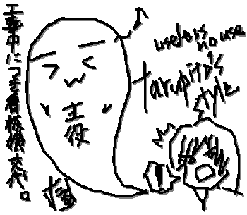
{kind=link}
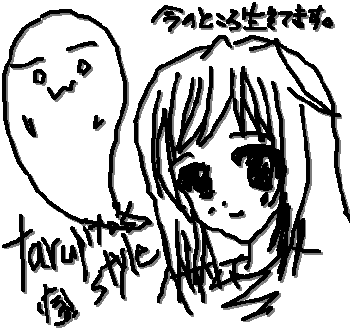
{kind=link}
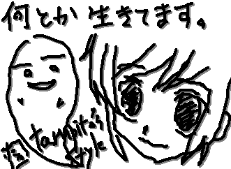

{kind=link}
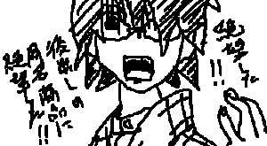